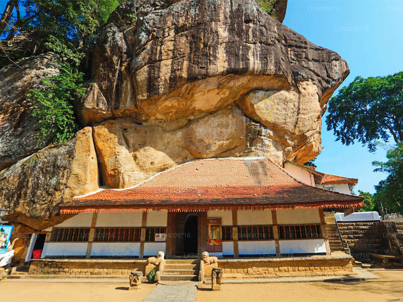
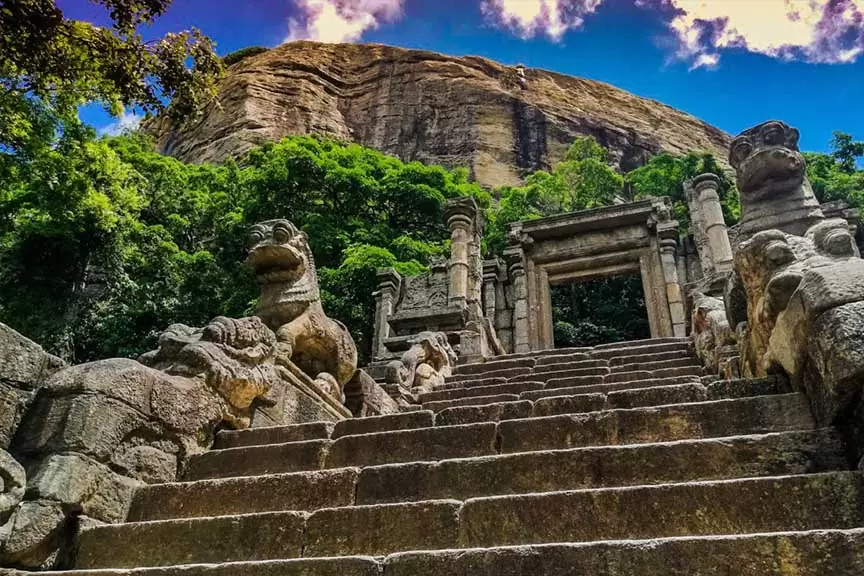
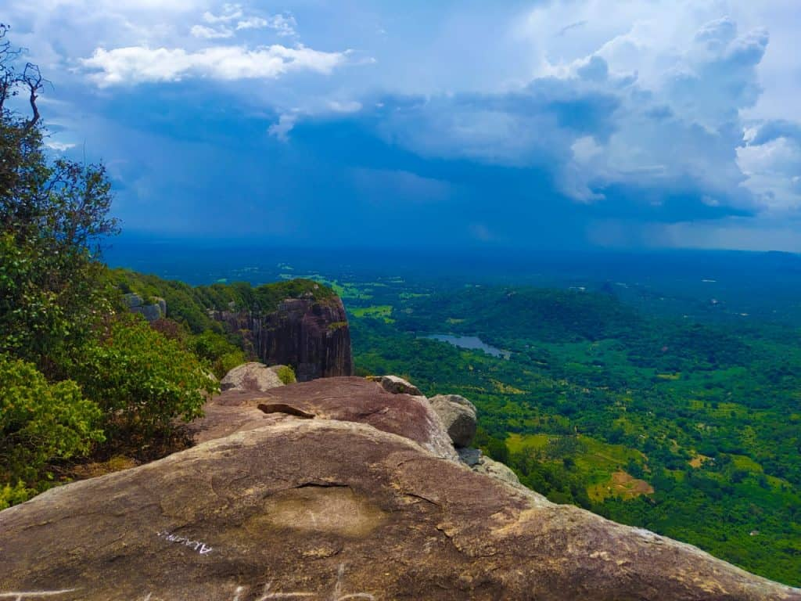
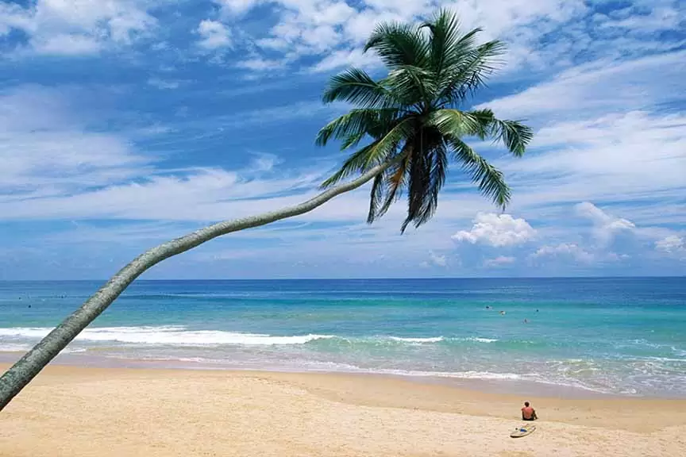
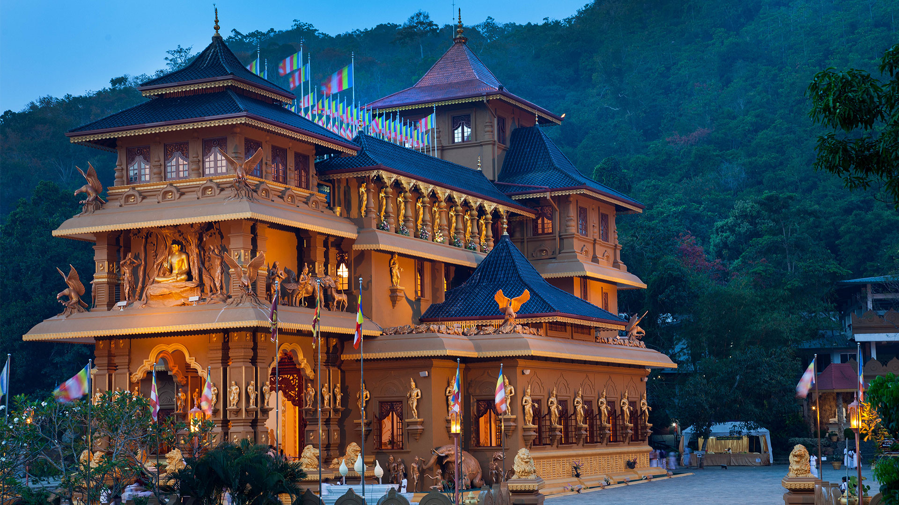

Welcome To The
" NORTH-WEST..."
North Western Province (Sinhala: වයඹ පළාත ) is a province of Sri Lanka. The province consists of the districts of Kurunegala and Puttalam.
Its capital is Kurunegala, which has a population of 28,571. The province is known mainly for its numerous coconut plantations. Other main towns in this
province are Chilaw (24,712) and Puttalam (45,661), which are both small fishing towns. The majority of the population of Wayamba province is of Sinhalese
ethnicity. There is also a substantial Sri Lankan Moor minority around Puttalam and Sri Lankan Tamils in Udappu and Munneswaram. Fishing, prawn farming and
rubber tree plantations are other prominent industries of the region. The province has an area of 7,888 km2, and a population of 2,370,075 (2011 census).
Places to visit in North-western Province

Ridi Viharaya
Ridi Viharaya or Silver Temple is a 2nd-century BCE Theravada Buddhist temple in the village of Ridigama, Sri Lanka. Built during the reign
of Dutthagamani of Anuradhapura, the temple is considered as the place where the silver ore, which provided silver to complete Ruwanwelisaya;
one of the largest stupa in Sri Lanka, was discovered.
Click here
to find out more.

Yapahuwa Rock Fortress
Yapahuwa (Sinhalese language : යාපහුව) was one of the ephemeral capitals of medieval Sri Lanka. The citadel of Yapahuwa lying midway between
Kurunagala and Anuradhapura was built around a huge granite rock rising abruptly almost a hundred meters above the surrounding lowlands.
Click here
to find out more.

Dolukanda Rajamaha Viharaya
Dolukanda is a well known mountain range due to the Dolukanda Raja Maha Viharaya (Dolukanda Buddhist Temple) and it is believed that the mountain
is directly linked to the great Indian epic, Ramayana Trail in Sri Lanka . In Ramayana story this mountain declared as Dolukada Sanjeewani mountain.
This is one of the five Sanjeevani drops in Sri Lanka which located in Kurunegala District.
Click here
to find out more.

Kalpitiya Beach
Kalpitiya (Sinhala: කල්පිටිය) is a coastal town located in western region of, Puttalam District. The Kalpitiya peninsula consists of a total
fourteen islands. It is developing as a tourist destination.
Click here
to find out more.

Siri Gautama Sambuddharaja Maligawa
Siri Gautama Sambuddharaja Maligawa is a temple in Sri Lanka. It means Grand Temple of Gautama Buddha.The Siri Gautama
Sambuddharaja Maligawa (Grand Temple of Gautama Buddha) is one of the most beautiful Buddhist temples in Sri Lanka. This magnificent temple was
completed in 2012 to honor Gautama Buddha and to commemorate the 2600th anniversary of his enlightenment. The temple was built with the meritorious
intentions and guidance of most venerable Kiribathgoda Gnanananda Thero, the founder of the Mahamevnawa Monastery.
Click here
to find out more.